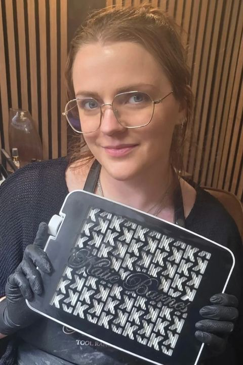
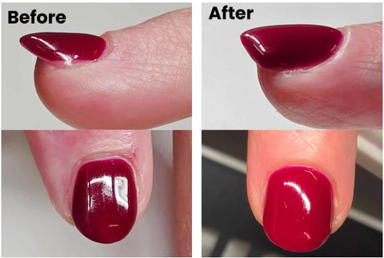
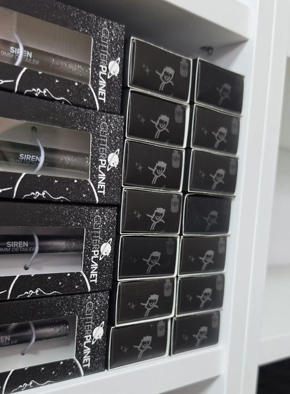

Nail education from a working desk in Dunfermline
Dannika has been behind the desk since 2017 and came to nails from engineering, which is why she teaches the reasons before the rules. She is completing her Award in Education and Training, and structured courses follow once she is qualified.
"the knowledge Dannika has as an educator is second to none"
Charlotte, who qualified in October 2025. Google review, July 2026.

Recalibration Sessions
One to one and in person, for qualified techs in Fife and Central Scotland. Dannika watches you work on one nail, then you go through prep, product control, structure, finish and troubleshooting together.

Masterclasses
For qualified techs, at the desk. All supplies are included on the day.

The Dannika Detailer
A limited edition brush made with Glitter Planet, five years after her first order from them. One end is a 9mm detailer for fine lines. The other is a flat shader for blending and clean up. The shaped body stops it rolling off the desk.
150 were made, each sent with a note in her own hand.
Buy the Detailer from Glitter Planet
Her code DANNIKA10 works on the rest of Glitter Planet too.